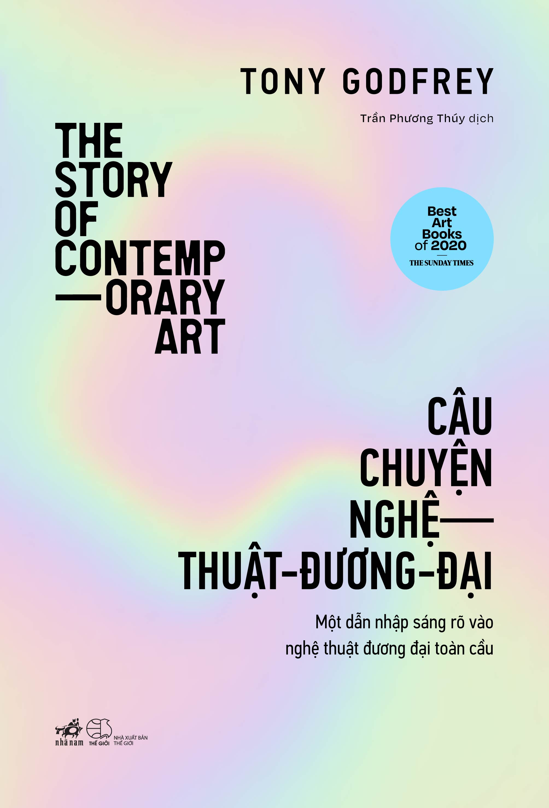
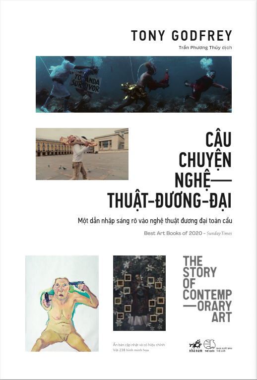
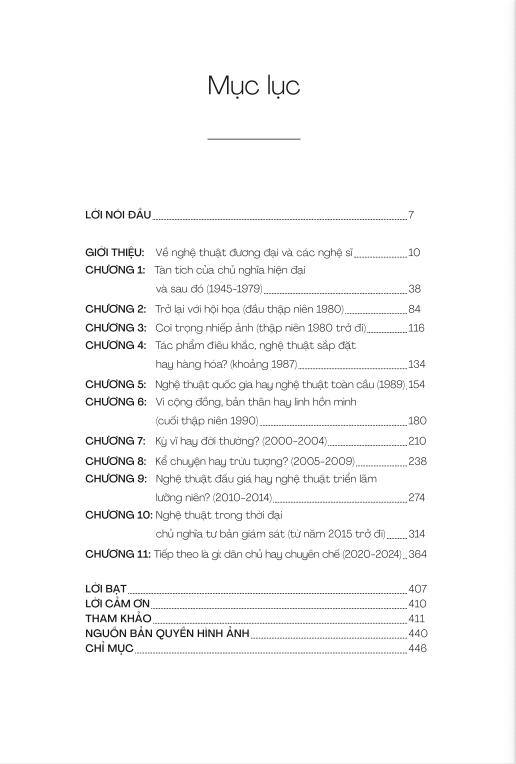
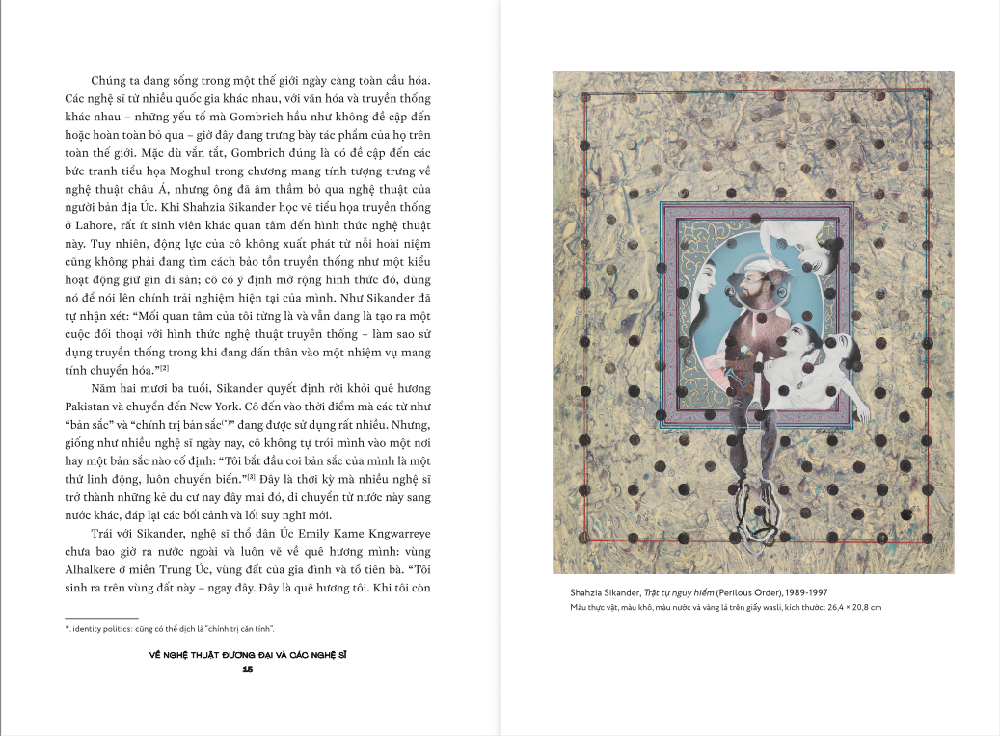
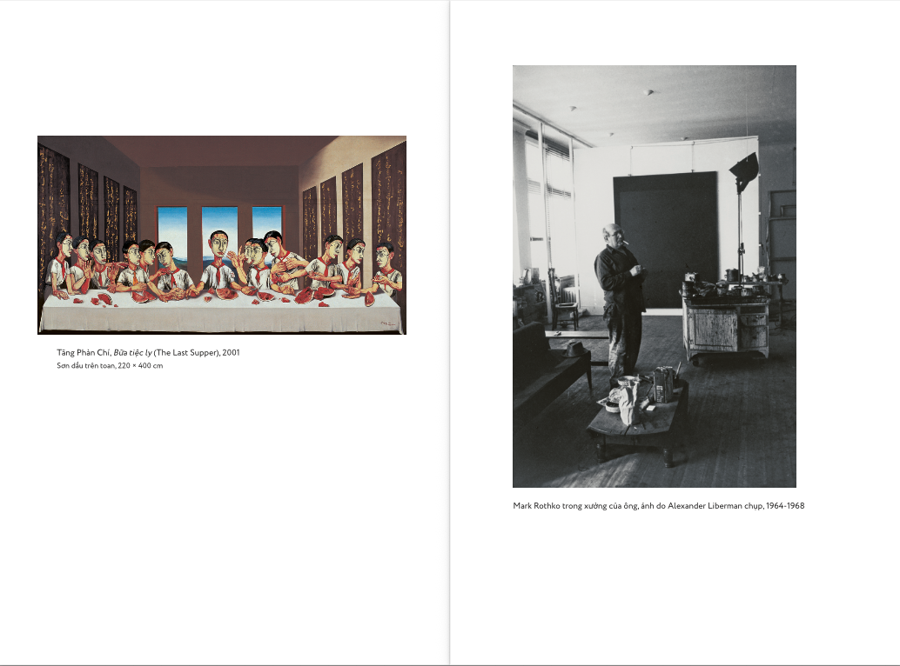
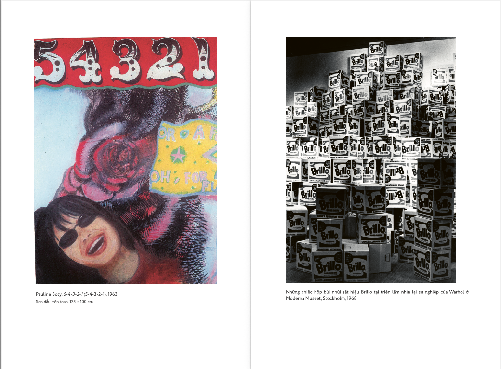
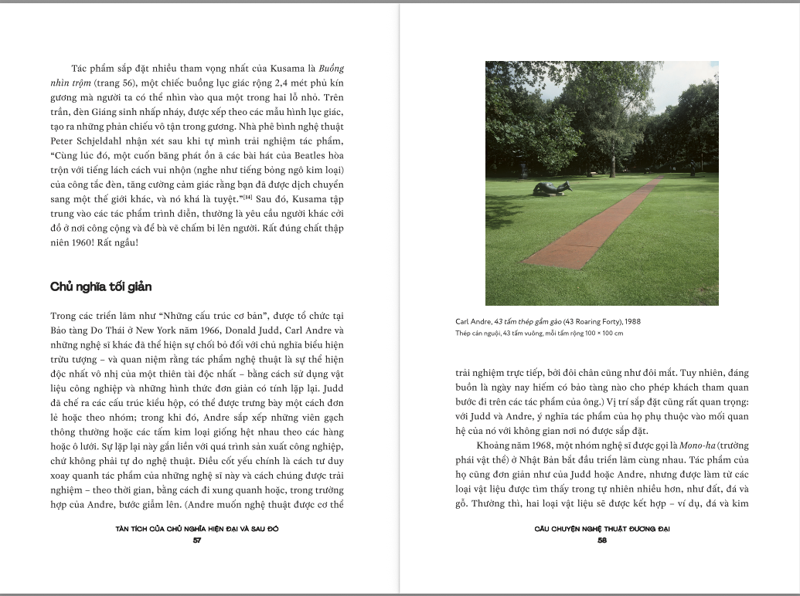

Người học và làm trong ngành sáng tạo
Dành cho sinh viên thiết kế, kiến trúc, truyền thông, mỹ thuật, quản trị văn hóa, di sản và creative industry cần một nền tảng đủ rộng để nói về hình ảnh, không gian, công chúng, ý tưởng và thiết chế nghệ thuật.
Best Art Books of 2020 - Sunday Times
Câu chuyện nghệ thuật đương đại · Tony Godfrey
Một dẫn nhập vào sáu mươi năm nghệ thuật toàn cầu, dành cho người từng đứng trước một tác phẩm lạ và không biết nên hỏi gì trước: ý nghĩa ở đâu, vì sao lại đắt, và tại sao nó được gọi là nghệ thuật.
Một quả chuối dán băng dính lên tường bán được 120.000 đô la. Một chiếc bồn tiểu sứ đặt trong phòng triển lãm và được gọi là nghệ thuật. Một nghệ sĩ ngồi bất động suốt nhiều giờ trước công chúng và đó cũng là tác phẩm.
Nếu vẫn đọc nghệ thuật bằng thói quen của tranh treo tường và tượng đặt trên bệ, những chuyện ấy rất dễ giống một trò đùa. Nhưng từ sau thập niên 1960, nghệ thuật đã đổi luật chơi: tác phẩm có thể là ý niệm, hành động, không gian, cơ thể, vật thể tìm thấy, thị trường, truyền thông hoặc chính sự phản ứng của người xem.
Câu chuyện nghệ thuật đương đại là cuốn sách giúp người đọc đi vào phần “khó chịu” ấy bằng một lối kể sáng rõ: không né tranh luận, nhưng cũng không biến nghệ thuật thành một mê cung thuật ngữ.

Điểm bắt đầu
Nghệ thuật đương đại thường bắt đầu bằng một cảm giác rất thật: mình đang đứng trước một thứ được gọi là nghệ thuật, nhưng không biết phải nhìn nó bằng tiêu chuẩn nào. Đẹp hay không đẹp? Công phu hay quá đơn giản? Ý tưởng hay trò gây chú ý?
Câu hỏi “đây có phải nghệ thuật không?” không hề ngây ngô. Với nghệ thuật từ sau thập niên 1960, đó gần như là cánh cửa đầu tiên. Khi tác phẩm không còn chỉ nằm trong khung tranh hay trên bệ tượng, người xem cũng cần một cách đọc khác.
Lời hứa của cuốn sách
Tony Godfrey không chỉ xếp các trào lưu theo thứ tự thời gian. Ông đặt chúng vào những cuộc va chạm đã làm nghệ thuật đương đại thành một lĩnh vực luôn gây tranh cãi: hội họa và ý niệm, bảo tàng và đường phố, nghệ sĩ và thiết chế, tác phẩm và thị trường, phương Tây và những trung tâm nghệ thuật đang nổi lên ngoài phương Tây.
Nhờ vậy, người đọc không chỉ nhớ tên pop art, minimalism, conceptual art, installation, performance hay video art. Quan trọng hơn, ta hiểu vì sao những thực hành ấy xuất hiện, chúng chống lại điều gì, và chúng đã thay đổi vai trò của người xem ra sao.
Xem trước
Nếu bạn còn ngại một cuốn sách nghệ thuật sẽ quá dày đặc thuật ngữ, hãy bắt đầu từ mục lục, vài trang mở đầu và cách sách đặt chữ cạnh hình. Những trang xem trước này giúp bạn hình dung nhịp đọc, lượng hình ảnh và cách Tony Godfrey dẫn người đọc vào từng vấn đề.






Ảnh xem trước chỉ nhằm giới thiệu hình thức và tinh thần trình bày của sách. Nội dung đầy đủ có trong bản in.
Vì sao nên đọc
Nghệ thuật đương đại không dễ chiều người xem. Nó có thể khiến ta nghi ngờ, phản đối, bật cười hoặc bực mình. Nhưng chính những phản ứng ấy lại là một phần của cuộc chơi: tác phẩm không chỉ để ngắm, mà còn để buộc ta hỏi lại ai có quyền định nghĩa nghệ thuật, thị trường can dự vào giá trị ra sao, và người xem thật sự làm gì khi đứng trước một tác phẩm.
Câu chuyện nghệ thuật đương đại không yêu cầu người đọc phải thích mọi thứ được gọi là nghệ thuật. Cuốn sách hữu ích hơn ở chỗ khác: nó giúp ta bất đồng một cách có hiểu biết hơn.
Tony Godfrey không xem bất đồng là thất bại của việc xem nghệ thuật. Với ông, bất đồng chính là dấu hiệu cho thấy cuộc trò chuyện đã bắt đầu.
“Bạn có thể bất đồng ý kiến với tôi, nhưng điều đó thật tuyệt vời! Điều đó có nghĩa là chúng ta đang có một cuộc tranh luận. Và nghệ thuật đương đại chính là về sự tranh luận.”
Tony Godfrey
Độc giả
Dành cho sinh viên thiết kế, kiến trúc, truyền thông, mỹ thuật, quản trị văn hóa, di sản và creative industry cần một nền tảng đủ rộng để nói về hình ảnh, không gian, công chúng, ý tưởng và thiết chế nghệ thuật.
Không cần giả vờ hiểu ngay trước một tác phẩm khó. Cuốn sách giúp bạn biết nên bắt đầu từ đâu: bối cảnh, ý niệm, vật liệu, cách trưng bày, phản ứng của người xem hay vị trí của tác phẩm trong thị trường.
Nếu những cuốn lịch sử nghệ thuật tổng quan đưa bạn qua các trào lưu và kiệt tác kinh điển, Tony Godfrey mở tiếp phần nhiều người thấy khó nhất: nghệ thuật sau 1960, khi định nghĩa về tác phẩm liên tục bị chất vấn.
Một món quà hợp với người học nghệ thuật, designer, curator trẻ, người làm truyền thông hoặc bất cứ ai muốn xây một nền tảng văn hóa thị giác nghiêm túc hơn. Không phải kiểu sách chỉ để bày trên bàn, mà là cuốn có thể mở ra đọc, tra lại và dùng trong nhiều cuộc trò chuyện.
Talk
Từ bảo tàng, thị trường đến đời sống sáng tạo
Một buổi trò chuyện nhập môn dành cho người muốn hiểu nghệ thuật đương đại từ nhiều phía: người xem, nghệ sĩ, curator, sinh viên, thị trường, không gian trưng bày và đời sống sáng tạo.
Thời gian, địa điểm và khách mời đang được cập nhật. Bạn có thể để lại thông tin để nhận thông báo khi form đăng ký mở.
Nhận thông báo khi mở đăng kýPre-order
Giá bìa: 575.000đ
Giá pre-order: 460.000đ
Ưu đãi dự kiến áp dụng đến hết ngày 15/8/2026.
Còn 44 ngày để đặt trước với ưu đãi này.
Nếu bạn đang tìm một cuốn sách nền về nghệ thuật đương đại, hoặc một món quà nghiêm túc cho người làm sáng tạo, đây là thời điểm phù hợp để đặt trước với mức giá tốt hơn.
FAQ
Có. Sách được viết như một dẫn nhập cho người muốn bước vào nghệ thuật đương đại, không yêu cầu nền tảng chuyên ngành từ trước.
Không. Sách có hình ảnh, nhưng giá trị chính nằm ở việc giúp người đọc hiểu lịch sử, bối cảnh, nhân vật, tác phẩm và các tranh luận của nghệ thuật đương đại.
Có. Đây là nhóm độc giả rất phù hợp, vì nghệ thuật đương đại liên quan trực tiếp đến cách ta hiểu hình ảnh, không gian, công chúng, thiết chế và đời sống sáng tạo.
Không bắt buộc. Cuốn sách của Tony Godfrey có thể đọc độc lập. Nếu Gombrich giúp người đọc đi qua lịch sử nghệ thuật rộng hơn, Godfrey tập trung vào phần nghệ thuật từ sau thập niên 1960.
Sách đi qua nhiều trào lưu, nghệ sĩ và khái niệm, nhưng được viết như một dẫn nhập. Người đọc không cần nền tảng chuyên ngành, chỉ cần sẵn sàng đi cùng những câu hỏi mà nghệ thuật đương đại đặt ra.
Có hình ảnh minh họa trong sách. Phần xem trước trên trang này giúp bạn hình dung cách sách đặt hình ảnh cạnh văn bản.
Phù hợp nếu người nhận quan tâm đến nghệ thuật, thiết kế, kiến trúc, truyền thông, văn hóa thị giác hoặc các ngành sáng tạo. Đây không phải kiểu sách quà tặng chỉ để trang trí, mà là một cuốn có thể đọc và dùng lại.